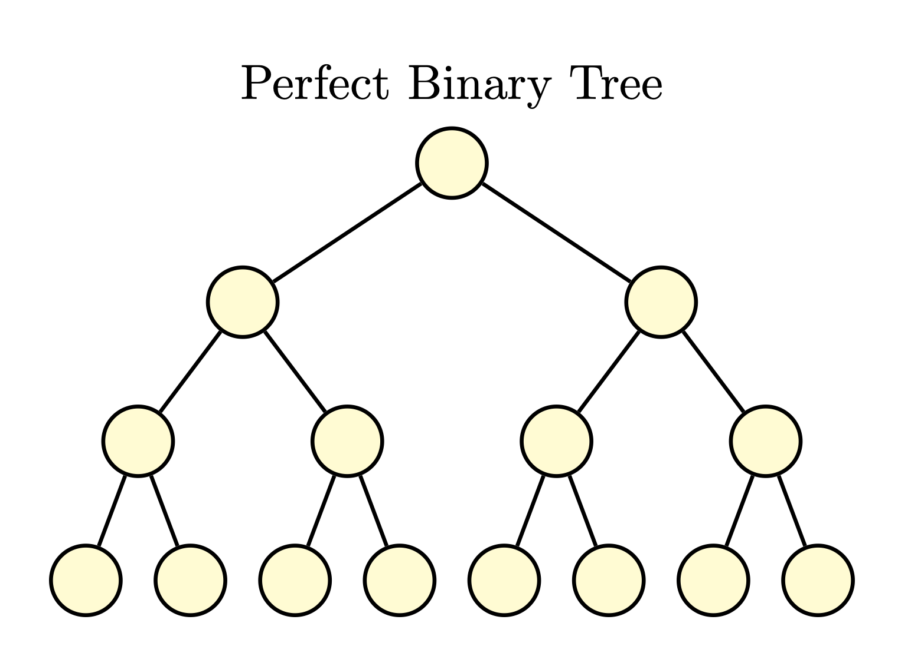
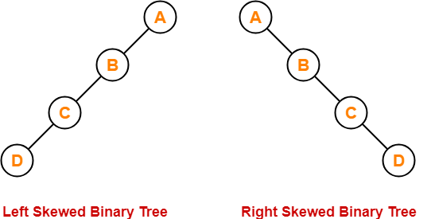
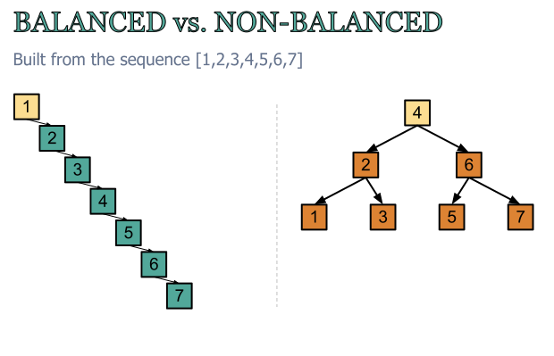
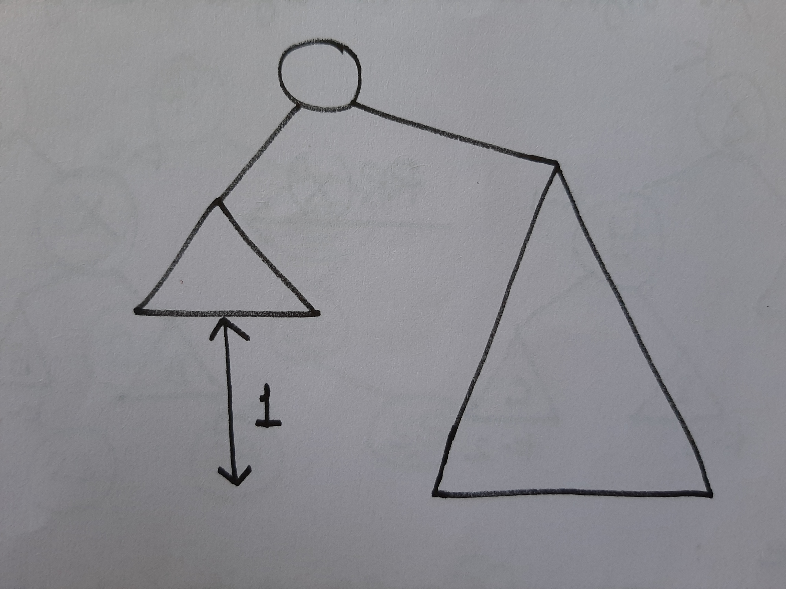
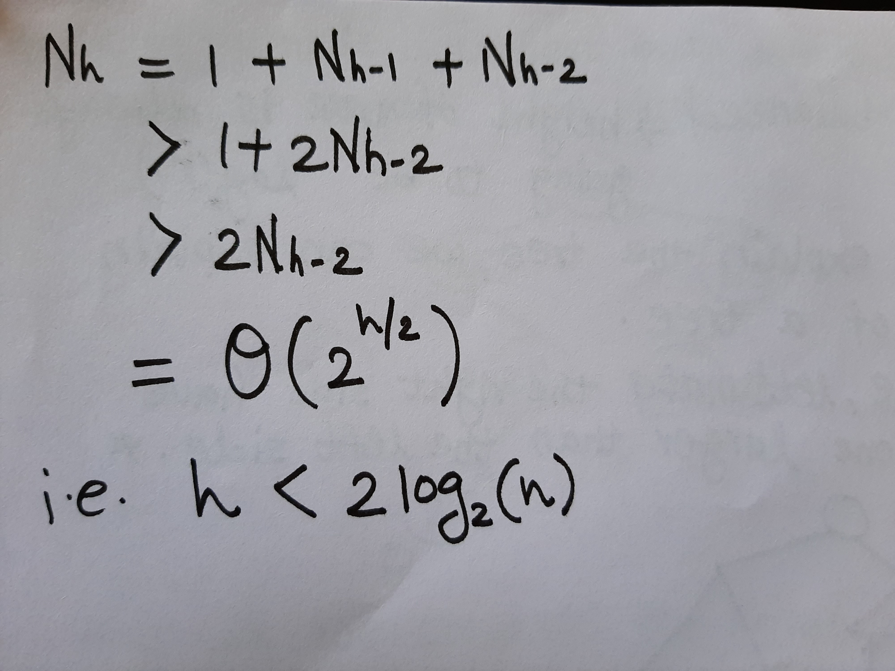
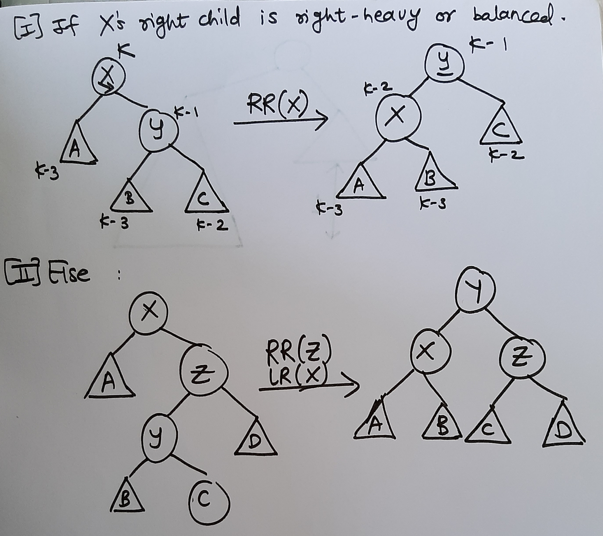

Balanced Binary Search Trees
Prerequisite:
Binary Search Tree(BST).
We all know about Binary Search Tree. We expect operations like Insertion,Searching data i.e. finding predecessor and successor and Deletion should get done in O(lg(n)) time where 'n' is total number of nodes. But in worst case of Binary Search Tree some BST are skew as showed in below figure:

In skew BST complexity not remains O(lg(n)) for operations as all nodes are either tilted toward left or right side of a node, Here Balanced Binary Search Trees comes in picture. What are balanced binary search trees? They are lots of self-balanced binary tree in this blog I'm going to talk about AVL (Adelson, Velskii, and Landi) Tree.
We called the tree balanced if height h is O(lg(n)).
Defination of Height: Length of the longest path always going down i.e. length of longest path from root to the some leaf. Comparision of height between balanced and unbalanced tree BST is shown in the below image:

Now the question should ask is how do we compute the height of a node???
Take max of the height of the children add 1.
Height of a node = max(height(leftChild),height(rightChild)) + 1
Depth of a single node is to be -1. Why -1? => Because the above formula works. Like leaves for example, have two childrens, which are -1 you take the max you add 1 and you get 0 so that just make things works out..
Require height of left and right children of every node to differ by at most +1 or -1. For every node, lets make the right side have a height of one larger than the left side.

Let Nh = minimum number of nodes in an AVL Tree of height h then height of AVL is obtained by using 'n' nodes should be:

AVL Insertion:
1) Simple BST insert.
2) Fix AVL property from changed node up.
How to fix AVL property? ====> By Rotations(constant time operation).

Suppose X is lowest node violating AVL. Assume right(X) is higher.

Why we looking at the right child? Because we assumed that the right one is higher. In the above figure 'K' represent height of node X. As it is right heavy so Y becomes 'K-1' and so C is 'K-2', node A is 'K-3' because we assumed right heavy is differ by 2.